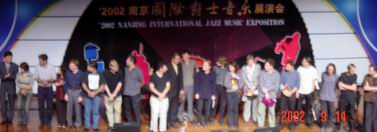

昨晚法国的德拉桑（CATHERINE DELASALLE）爵士乐队和比利时Troissoeur爵士乐队在南京的艺术中心进行这次展演会首场演出。我们的票属于最便宜的50元一张,坐在二楼的第二排,里面的设施远比艺术中心的外观要优良的多，当然也超出了我的想象！去年或者是前年我在南京艺术学院的音乐厅观看过全国院校民族歌手比赛，那是我认为我感受过的除了北京的民族剧院之后设施最好的剧院，其实南艺的音乐厅应该是纯为音乐和声乐表演建造的。听那次的民族歌手的演唱，我尽然对民歌有了前所未有的好感，歌手在舞台上表演一律不用麦克风，歌词有电子屏幕一句句的显示出来。音乐厅内非常安静，可以感觉得到歌手的声音通过厅内特别设计的全木质构造墙壁给观众带来的美妙感受。南京艺术中心也是一样的雷同于南艺音乐厅的构造设计，我想如果我不心疼口袋里的银子，选择一楼前10排左右的位置上，或许可以更好的感受到演出的效果。不过那要等我真的具备了鉴赏音乐的耳朵和水平之后，而目前我完全是从艺术熏陶方面去参加这类活动的。
第一个演出的是法国CATHERINE DELASALLE乐队，这个乐队融合了爵士、法国民间音乐和吉普赛音乐。之后上场的Troissoeur是比利时的国际性乐队。他们的表演热情、感人。该乐队所有的音乐都是他们自己创作的，音乐轻快、富有节奏感、充满活力，表演具有国际水平。多元文化的外在影响（如东方的灵感、巴尔干山脉的音乐、爱尔兰、法国等等）成为了Troissoeur乐队的本质特性。他们的音乐介存于民间音乐和虚幻（自己创作的包含不同的风格）之间。还有一点也是非常引人注意的“直觉是他们创作的主要基础。他们赋予听众以后总完全自主自由的解释。至今为止，该乐队已举行了160场音乐会，还曾在著名的民间音乐节-布鲁日节的国际舞台上表演过。
就我个人欣赏的水平而言，我更喜欢比利时乐队的演奏风格，起初的乐曲有很浓的爱尔兰音乐的特点，让人联想到山谷、草原、流水以及奔跑的马群，自由、粗犷大气但又不失细腻。乐队成员以他们鬼魅怪异且富有浓郁民族特点的琴声、嗓音以及形体表现出的效果使我毛孔扩张浑身发麻，并沁入人魂魄的感觉！
这次南京国际爵士音乐展演会有德国THEOJORGENSMANN QUARTET和、法国CATHERINE DELASALLE、比利时TROISSOEUR、加拿大和韩国的TAEJEON参加，活动将进行到下周三结束。

—从二楼拍摄到的舞台及观众席

—法国和比利时乐队合奏最后一曲

—此次参加展演会的外国乐队人员
No Responses to “2002南京国际爵士音乐展演会(2002.9.14.)”
Leave A Reply
存档只读，评论已关闭。